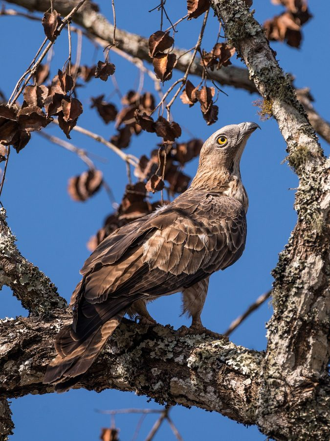

मधुबाज़Oriental Honey Buzzard
Pernis ptilorhynchus · Accipitridae · BRD-0180

- Scientific name वैज्ञानिक नाम
- Pernis ptilorhynchus (Temminck, 1821)
- Family कुल
- Accipitridae
- Hindi हिंदी
- मधुबाज़
- Local names स्थानीय नाम
- madhubaz, madhu baaz, honey buzzard, oriental honey buzzard
- Status here यहाँ की स्थिति
- native
- Movement आवागमन
- Resident, here all year
- Known from कहाँ दर्ज
- Others have published records from the Basti–Ayodhya districts बस्ती–अयोध्या के ज़िलों से दूसरों के प्रकाशित अभिलेख
- IUCN IUCN
- LC
- Review समीक्षा
- audited and independently read
When to look कब देखें
Present all year. साल भर मौजूद।
Bakhira survey (Mishra et al. 2019) reports it; some populations may breed locally while others are nomadic following wasp and bee nests. All migrants and visitors →
Uses and possibilities उपयोग और संभावनाएँ
Drawn from the documented uses in the profile below, where each is labelled traditional, current or a research lead. All uses →
Tell it apart from इनसे अलग पहचानें
मधुबाज़ / Oriental Honey Buzzard
Pernis ptilorhynchus (Temminck, 1821) — Accipitridae
मधुबाज़ — पूर्वी उत्तर प्रदेश के खुले जंगलों, बागों और कृषि क्षेत्रों में पाई जाने वाली एक मध्यम आकार की, गहरे रंग की चील, जो शहद की मक्खियों और ततैयों को खाने के लिए विशेष रूप से अनुकूलित है। इसका नाम "मधुबाज़" इसलिए है कि यह मधु मक्खियों के छत्तों और ततैयों के घोंसलों को तोड़कर उन्हें खाता है। इसके सिर पर लंबी पंखों की कलगी होती है, जिससे यह अन्य चीलों से अलग दिखती है। इसकी विशेषता यह है कि इसकी त्वचा (skin) मोटी होती है, जो मक्खी और ततैय के डंकों से इसे बचाती है।
Quick Identification त्वरित पहचान
| Feature | Description |
|---|---|
| Size | Medium raptor; 60–66 cm long |
| Plumage | Dark brown or greyish overall; variable pattern |
| Head | Distinctive elongated crest of feathers |
| Eyes | Yellow or pale; frontal shield bare |
| Bill | Small, hooked; underside of cere bare |
| Wings | Dark, often with pale bands |
| Flight | Flapping and gliding; slow, deliberate |
| Behaviour | Often seen perching; hunts from height |
Field tip: A dark, medium-sized eagle with a distinctive head crest. The elongated feathers on the crown are diagnostic. Often perches in tall trees. Flies slowly and deliberately, scanning for insects, particularly bees and wasps.
हिंदी — कैसे पहचानें:
मध्यम, गहरे रंग की चील।
सिर पर खड़ी कलगी (crest)।
पीली आँखें।
धीरे-धीरे, गहन दृष्टि से उड़ता है।
Morphology आकारिकी
Biometrics:
| Measurement | Range |
|---|---|
| Total length | 600–660 mm |
| Wing (folded) | 380–420 mm |
| Tail | 240–280 mm |
| Bill | 20–24 mm |
| Weight (male) | 500–600 g |
| Weight (female) | 600–750 g |
Size: 60–66 cm long; medium-sized raptor.
Plumage: Overall dark brown to greyish-brown; highly variable with individual and geographical variation. Some birds pale below, others uniformly dark.
Head: Distinctive erectile crest of elongated feathers; head appears elongated and distinctive. Cream or pale supercilium sometimes visible.
Eyes: Yellow to pale yellow; surrounded by bare facial skin.
Frontal shield: Bare skin between eye and bill; yellow or cream-coloured; distinctive of the genus.
Bill: Small, hooked; underside of cere (naked skin at bill base) bare and bare skin visible; adapted for consuming insects without bill injury.
Wings: Dark brown; often with pale bands or bars. Primaries relatively shorter than other eagles.
Legs and feet: Short, relatively weak; yellow to orange; feet not adapted for holding large prey.
Sexes: Females larger than males; both sexes crested.
Juveniles: Similar to adults; duller plumage; feather-crests less pronounced.
Vocalisations. Call repertoire:
- Contact call: Weak, whistled pee-pee or ki-ki, less vocal than many raptors.
- Flight call: Occasionally given calls while hunting.
- Generally quiet; silent for much of the year.
हिंदी: चुप्प रहने वाली चील है। शायद ही कभी आवाज़ निकालती है। कभी-कभी "की-की" करती है।
Behaviour & Ecology व्यवहार और पारिस्थितिकी
Specialised wasp and bee hunter: Uniquely adapted for hunting insects, particularly wasps and bees. Primary diet consists of:
- Wasp nests and larvae
- Bee colonies (honeybees and wild species)
- Bumblebees and their larvae
- Other insects opportunistically
Feeding method: Hunts by perching and scanning for flying insects and nests. Approaches nests carefully and extracts larvae and pupae. Skin and plumage highly resistant to stings; feeds on nests with apparent impunity.
Feeding behaviour: Hovers over potential prey; dives to catch flying insects or raid nests. Can consume large quantities of wasp larvae; observed feeding on nests for extended periods.
Nomadic tendency: Movements follow availability of wasps and bees; may remain in areas with abundant nests or move on.
Roosting: Roost in tall trees; solitary or in pairs.
Social behaviour: Largely solitary; some pairing during breeding season.
हिंदी: ततैयों और मक्खियों का शिकार करता है। उनके घोंसलों को तोड़कर अंडे और सूंडियाँ खाता है। शांति से शिकार करता है।
Life Cycle / Phenology जीवन चक्र
Resident and nomadic: Largely resident in Uttar Pradesh, though movements follow insect availability. Some breeding pairs remain year-round; others may be transient.
Breeding: March–July; peaks May–June in Uttar Pradesh. Monogamous; pairs may breed in consecutive years.
Nest: Stick nest in tall trees, often in riparian woodlands.
Clutch: 1–2 eggs (usually 1); incubation 38–40 days.
Fledging: Single young leaves nest at 40–45 days.
Seasonal movements: Follow availability of wasps and bees; more abundant when insect populations peak.
हिंदी: साल भर रह सकता है। मई-जून में अंडे देता है। एक ही अंडा देता है। 45 दिन में बच्चा उड़ जाता है।
Host Plants or Prey आहार
| Food Type | Examples | Feeding Behaviour |
|---|---|---|
| Wasps | Paper wasps, mud daubers, vespid wasps | Raid nests; extract larvae and pupae |
| Bees | Honeybees, wild bees | Attack colonies; feed on brood |
| Bumblebees | Bombus species | Opportunistic feeding |
| Other insects | Dragonflies, locusts (occasional) | Glean from air or vegetation |
हिंदी: ततैयों के घोंसले तोड़ता है, सूंडियाँ निकालता है। मधु मक्खियों के छत्ते भी खाता है। कुछ कीटें भी खाता है।
Predators / Natural Enemies शत्रु
- Avian predators: Large eagles (rare due to medium size),
- At nest: Crows, large snakes
- Mammalian predators: Unlikely due to raptor size
- Parasites: Avian parasites, blood parasites
हिंदी: शायद ही शिकार का शिकार होता है। बड़ी चील इसका दुश्मन हो सकती है।
Agricultural / Human Relevance कृषि प्रासंगिकता
Pest control: Historically valued for consuming honeybees (to reduce wax and honey loss) and wasps (reducing crop damage). Modern view more mixed given importance of pollinators.
Beekeeper perspective: Mixed value — reduces honeybee colony losses but can also target managed hives. In historical context, tolerated for wasp nest removal benefit.
Habitat requirement: Depends on healthy insect populations and tall nesting trees; affected by deforestation and pesticide use.
हिंदी: यह चील वन्यजीव अधिनियम 1972 की अंतर्गत पूरी तरह संरक्षित है। ततैयों को खाता है, जो फसलों को नुकसान देती हैं, पर मधु मक्खियों को भी खाता है, जो महत्वपूर्ण परागणकर्ता (pollinators) हैं।
Expected Locally स्थानीय रूप से अपेक्षित
Not a field record. Written from published accounts for eastern Uttar Pradesh. No confirmed local sighting yet — if you have seen it, that is what the atlas needs.
अभी तक स्थानीय पुष्टि नहीं। यह विवरण प्रकाशित स्रोतों से है, किसी अवलोकन से नहीं।
This species is NOT a field record. The distribution below is based on published sources describing where Oriental Honey Buzzard should be looked for in eastern Uttar Pradesh.
Range: Expected in open woodlands, gardens, and riparian areas throughout Basti–Ayodhya region, following availability of wasp and bee populations.
Habitat preference: Open woodland and gardens with tall trees for nesting; areas with abundant insect nests.
Seasonality: Largely resident year-round; locally nomadic following insect phenology. Movements unpredictable but most common during breeding season.
Published records: GBIF holds published records from these districts.
What a first record would be: A dated photograph showing the bird's distinctive crest and head features, with GPS coordinates and date, submitted through the About page.
हिंदी: यह चील स्थानीय रूप से अपेक्षित है। बाग-बगीचों और खुले इलाकों में देखी जाती है। साल भर हो सकती है, पर कभी-कभी।
Distribution वितरण
Global range: South and Southeast Asia from foothills to peninsular region. Multiple subspecies across range.
In India: Distributed across much of the subcontinent in suitable habitat.
In Uttar Pradesh: Resident in northern and eastern districts; distribution patchy following insect availability.
In Basti district / eastern UP: Patchily distributed in open woodlands and gardens; recorded from Bakhira and likely present elsewhere in suitable habitat.
Research Questions शोध प्रश्न
- What are the precise movement patterns of Oriental Honey Buzzards, and do they show year-to-year fidelity to particular territories or follows food?
- How does the diet of Oriental Honey Buzzards affect local wasp and bee populations, and what is the ecological role in ecosystem regulation?
- Do Oriental Honey Buzzards show any preference for particular species of wasps or bees, and does diet vary seasonally?
- क्या कीटनाशकों के उपयोग से ततैयों और मक्खियों की संख्या में कमी से इस चील को नुकसान हो रहा है?
- What is the conservation status and trend of this species in eastern UP, and what habitat factors support populations?
- क्या शहरी विस्तार और पेड़ों की कटाई इस चील की संख्या को प्रभावित कर रहे हैं?
Similar Species मिलती-जुलती प्रजातियाँ
| Species | Key Difference | Hindi | Field Rule | |
|---|---|---|---|---|
| [[crested_serpent_eagle\ | Crested Serpent Eagle]] (Spilornis cheela) | Similar crested head but yellow spotting on wings visible; hunts snakes, not insects | सर्प चील | Crested Serpent Eagle shows yellow spotting on dark wings. Oriental Honey Buzzard lacks this pattern. |
| [[steppe_eagle\ | Steppe Eagle]] (Aquila nipalensis) | Much larger (81 cm); no crest; different colour pattern | स्टेपी चील | Steppe Eagle is much larger without crest. |
Field rule: Oriental Honey Buzzard's distinctive erectile crest and small hooked bill with bare frontal shield are diagnostic. Watch for it hunting near wasp and bee nests. The small bill (compared to other eagles) is distinctive.
Taxonomy & Classification वर्गीकरण
Original description. Described by Coenraad Jacob Temminck in 1821 in Planches Coloriées d'Oiseaux, livr. 74 (no. 437), as Falco ptilorhynchus. Type locality is Java, Indonesia.
Subspecies. Multiple subspecies recognised:
- P. p. ptilorhynchus (Temminck, 1821) — Indian subcontinent (occurs in UP)
- P. p. orientalis — eastern Asia
Populations in Uttar Pradesh belong to P. p. ptilorhynchus.
Family and order placement. Order Accipitriformes; family Accipitridae (eagles and hawks). The genus Pernis contains the honey buzzards, specialised for insect hunting.
Phylogenetic notes. Closely related to European Honey Buzzard (Pernis apivorus); represents Asian representative of the genus.
IUCN status rationale. Assessed as Least Concern (LC) globally. Populations remain widespread despite habitat loss. Pesticide impacts on insect populations may affect long-term viability.
हिंदी: यह चील पूरे दक्षिण एशिया में मिलती है। भारत में साल भर रहती है। कानून से संरक्षित है।
Photo Gallery फोटो गैलरी
No photos yet — add field photos to media/species/oriental_honey_buzzard/ and run node scripts/sync_photos.js.
Wanted photos:
- Perched with crest visible
- In flight showing wing patterns
- At wasp or bee nest
- Pair during breeding season
- Close-up of head features
References संदर्भ
- Temminck, C. J. (1821). Planches Coloriées d'Oiseaux. Livr. 74, no. 437.
- Ali, S. & Ripley, S. D. (1968). Handbook of the Birds of India and Pakistan. Vol. 1 (Divers to Hawks). Oxford University Press, Delhi. Pp. 287–290.
- Cramp, S. & Simmons, K. E. L. (1980). Handbook of the Birds of Europe, the Middle East and North Africa: The Birds of the Western Palearctic. Vol. 2 (Hawks to Bustards). Oxford University Press. Pp. 166–175.
- Ferguson-Lees, J. & Christie, D. A. (2001). Raptors of the World. Houghton Mifflin, Boston. Pp. 232–233.
- Mishra, H., Kumar, V. & Kumar, A. (2019). Population structure and habitat utilization of migratory birds at Bakhira Bird Sanctuary, Uttar Pradesh, India. Pakistan Journal of Zoology 52(1): 247–254.
- IUCN Red List (2023). Pernis ptilorhynchus — BirdLife International assessment. IUCN, Cambridge. Status: Least Concern.
- GBIF Secretariat (2026). Pernis ptilorhynchus. GBIF Backbone Taxonomy. https://www.gbif.org/
Source file: species/fauna/birds/oriental_honey_buzzard.md